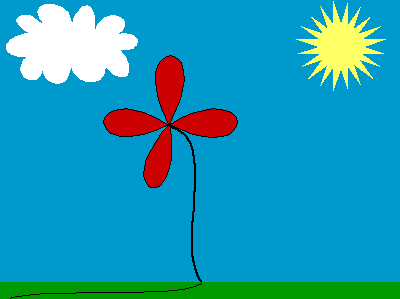

SpiniVector 1.1
SpiniVector is an amazing vector image editing class. Simply make a canvas, set its super to SpiniVector, and your program will have impressive vector editing cababilities, without a single line of code. Leaving it like this would be a waste, so you'll want to add buttons to change tools, rotate shapes, and all sorts of other goodies.
Currently, SpiniVector supports the following tools:
• Selection Arrow
• Ovals
• Rectangles
• Rounded Rectangles
• Polygons (open or closed)
• Regular Polygons
• Lines
• Freehand drawing
• Bezier Curves
All the polygons and lines can also be rotated using the impressive rotation tool. Any shape can have a custom border size, seperate border and fill colors, or be transparent. And then, you can resize an image–smoothed or unsmoothed. Here's a sample of what SpiniVector can do:

But that's not all! Download it now to see SpiniVector for yourself!
| spinivector.sit | 150K |